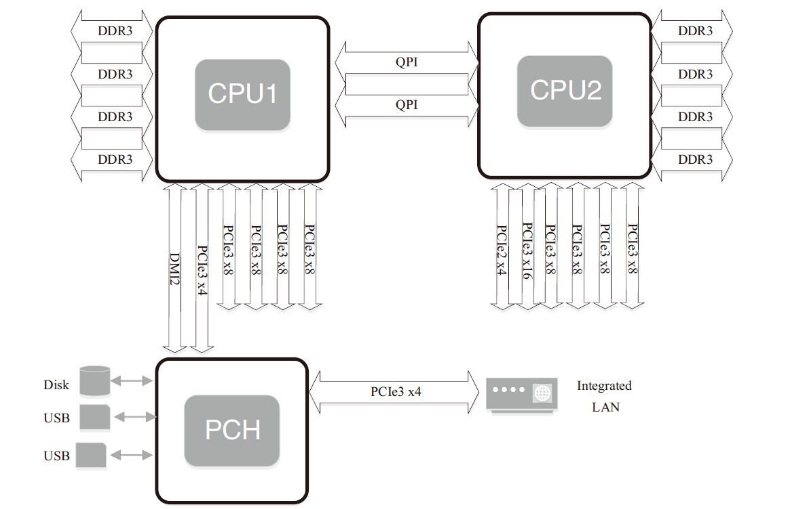
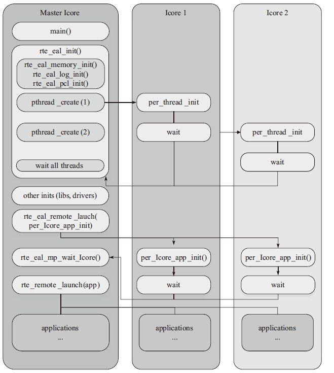

NUMA
NUMA来源于AMD Opteron微架构，处理器和本地内存之间有更小的延迟和更大的带宽；每个处理器还可以有自己的总线。处理器访问本地的总线和内存时延迟低，而访问远程资源时则要高。

DPDK充分利用了NUMA的特点
- Per-core memory，每个核都有自己的内存，一方面是本地内存的需要，另一方面也是为了cache一致性
- 用本地处理器和本地内存处理本地设备上产生的数据
|
CPU核心的几个概念：
- 处理器核数（cpu cores）：每个物理CPUcore的个数
- 逻辑处理器核心数（siblings）：单个物理处理器超线程的个数
- 系统物理处理器封装ID（physical id）：也称为socket插槽，物理机处理器封装个数，物理CPU个数
- 系统逻辑处理器ID（processor）：逻辑CPU数，是物理处理器的超线程技术
CPU亲和性
将进程与CPU绑定，提高了Cache命中率，从而减少内存访问损耗。CPU亲和性的主要应用场景为
- 大量计算场景
- 运行时间敏感、决定性的线程，即实时线程
相关工具
sched_set_affinity()、sched_get_affinity()内核函数- taskset命令
- isolcpus内核启动参数：CPU绑定之后依然是有可能发生线程切换，可以借助isolcpus=2,3将cpu从内核调度系统中剥离。
DPDK中的CPU亲和性
DPDK中lcore实际上是EAL pthread，每个EAL pthread都有一个Thread Local Storage的_lcore_id，_lcore_id与CPU ID是一致的。注意虽然默认是1:1关系，但可以通过--lcores='<lcore_set>@<cpu_set>'来指定lcore的CPU亲和性，这样可以不是1:1的，也就是多个lcore还是可以亲和到同一个的核，这就需要注意调度的情况（以非抢占式无锁rte_ring为例）：
- 单生产者、单消费者模式不受影响
- 多生产者、多消费者模式，调度策略为
SCHED_OTHER时，性能会有所影响 - 多生产者、多消费者模式，调度策略为
SCHED_FIFO/SCHED_RR，会产生死锁
而在具体实现流程如下所示：

- DPDK通过读取
/sys/devices/system/cpu/cpuX/目录的信息获取CPU的分布情况，将第一个核设置为MASTER，并通过eal_thread_set_affinity()为每个SLAVE绑定CPU - 不同模块要调用
rte_eal_mp_remote_launch()将自己的回调函数注册到DPDK中（lcore_config[].f） - 每个核最终调用
eal_thread_loop()->回调函数来执行真正的逻辑
指令并发
借助SIMD（Single Instruction Multiple Data，单指令多数据）可以最大化的利用一级缓存访存的带宽，但对频繁的窄位宽数据操作就有比较大的副作用。DPDK中的rte_memcpy()在Intel处理器上充分利用了SSE/AVX的特点：优先保证Store指令存储的地址对齐，然后在每个指令周期指令2条Load的特新弥补一部分非对齐Load带来的性能损失。
数据同步与互斥
DPDK根据多核处理器的特点，遵循资源局部化的原则，解耦数据的跨核共享，使得性能可以有很好的水平扩展。但当面对实际应用场景，CPU核间的数据通信、数据同步、临界区保护等都是不得不面对的问题
原子操作
原子操作（atomic operation）：不可被中断的一个或一系列操作，多个线程执行一个操作时，其中任何一个线程要么完全执行完此操作，要么没有执行此操作的任何步骤，那么这个操作就是原子的。原子操作是其他内核同步方法的基石。CPU提供三种独立的原子锁机制：原子保证操作、加LOCK指令前缀和缓存一致性协议。
原子操作在DPDK代码中的定义都在rte_atomic.h文件中，主要包含两部分：内存屏蔽和原16、32和64位的原子操作API。
rte_mb（）：内存屏障读写APIrte_wmb（）：内存屏障写APIrte_rmb（）：内存屏障读APIrte_atomic64_add()：原子操作API
读写锁
读写锁实际是一种特殊的自旋锁，它把对共享资源的访问操作划分成读操作和写操作，读操作只对共享资源进行读访问，写操作则需要对共享资源进行写操作。这种锁相对于自旋锁而言，能提高并发性，因为在多处理器系统中，它允许同时有多个读操作来访问共享资源，最大可能的读操作数为实际的逻辑CPU数。
1）互斥。任意时刻读者和写者不能同时访问共享资源（即获得锁）；任意时刻只能有至多一个写者访问共享资源。
2）读者并发。在满足“互斥”的前提下，多个读者可以同时访问共享资源。
3）无死锁。如果线程A试图获取锁，那么某个线程必将获得锁，这个线程可能是A自己；如果线程A试图但是永远没有获得锁，那么某个或某些线程必定无限次地获得锁。
DPDK读写锁的定义在rte_rwlock.h文件中，主要用于在查找空闲的memory segment的时候，使用读写锁来保护memseg结构；LPM表创建、查找和释放；Memory ring的创建、查找和释放；ACL表的创建、查找和释放；Memzone的创建、查找和释放等。
自旋锁
自旋锁必须基于CPU的数据总线锁定，它通过读取一个内存单元（spinlock_t）来判断这个自旋锁是否已经被别的CPU锁住。如果否，它写进一个特定值，表示锁定了总线，然后返回。如果是，它会重复以上操作直到成功，或者spin次数超过一个设定值。锁定数据总线的指令只能保证一个指令操作期间CPU独占数据总线。（自旋锁在锁定的时侯，不会睡眠而是会持续地尝试）。其作用是为了解决某项资源的互斥使用。因为自旋锁不会引起调用者睡眠，所以自旋锁的效率远高于互斥锁。虽然自旋锁的效率比互斥锁高，但是它也有些不足之处：
1）自旋锁一直占用CPU，它在未获得锁的情况下，一直运行——自旋，所以占用着CPU，如果不能在很短的时间内获得锁，这无疑会使CPU效率降低。
2）在用自旋锁时有可能造成死锁，当递归调用时有可能造成死锁，调用有些其他函数（如copy_to_user（）、copy_from_user（）、kmalloc（）等）也可能造成死锁。
DPDK中自旋锁API的定义在rte_spinlock.h文件中，其中rte_spinlock_lock(), rte_spinlock_unlock()被广泛的应用在告警、日志、中断机制、内存共享和link bonding的代码中，用于临界资源的保护。
无锁机制
在多核环境下，需要把重要的数据结构从锁的保护下移到无锁环境，以提高软件性能。现在无锁机制变得越来越流行，在特定的场合使用不同的无锁队列，可以节省锁开销，提高程序效率。Linux内核中有无锁队列的实现，可谓简洁而不简单（kfifo是一种“First In First Out”数据结构，它采用了前面提到的环形缓冲区来实现，提供一个无边界的字节流服务。采用环形缓冲区的好处是，当一个数据元素被用掉后，其余数据元素不需要移动其存储位置，从而减少拷贝，提高效率。更重要的是，kfifo采用了并行无锁技术，kfifo实现的单生产/单消费模式的共享队列是不需要加锁同步的）。
无锁队列中单生产者——单消费者模型中不需要加锁，定长的可以通过读指针和写指针进行控制队列操作，变长的通过读指针、写指针、结束指针控制操作。
基于无锁环形缓冲的的原理，Intel DPDK提供了一套无锁环形缓冲区队列管理代码，支持单生产者产品入列，单消费者产品出列；多名生产者产品入列，多名消费者出列操作。